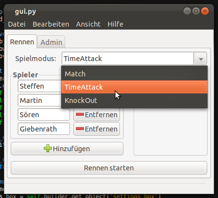
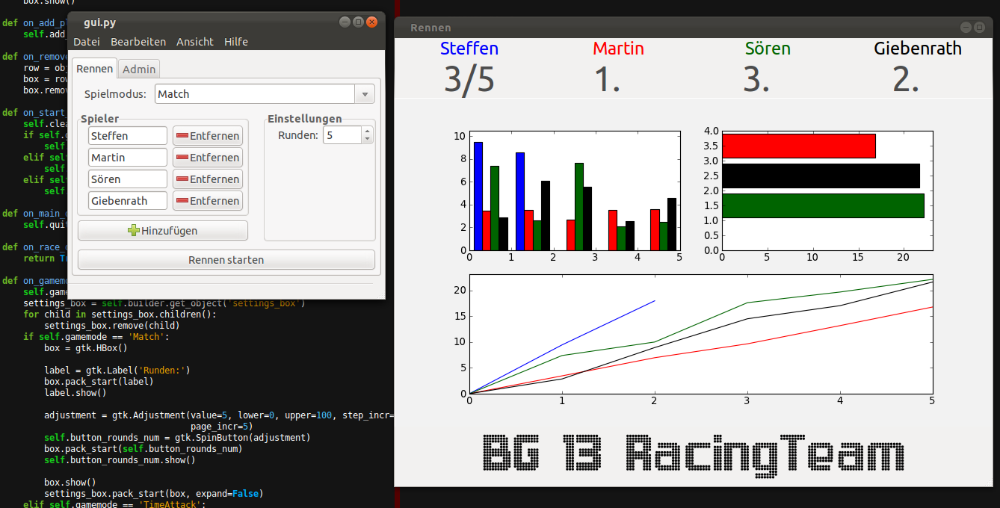
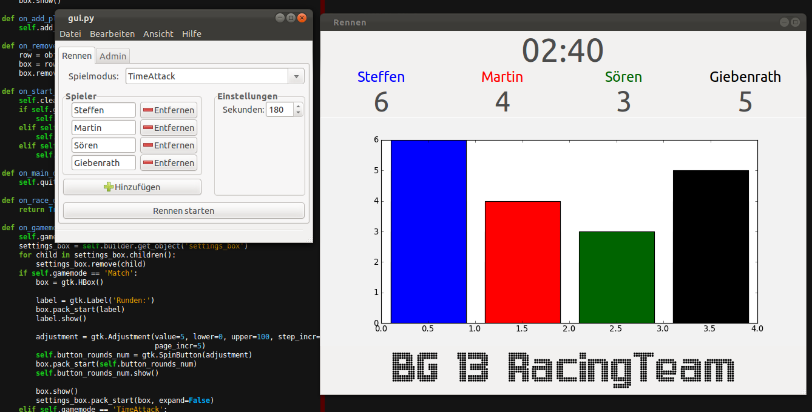

Class which handles the GTK interface.
Add a new player box to the player list.
Clear the racewindow
Removes any infromation from the racewindow to provide a clean interface
Formats the page for printing.
(De)activates interface elements like player names
Returns a list of playernames.
Power the given track off. Pass -1 to power all off
Power the given track on. Pass -1 to power all on
Renders the print template and unlocks interface.
Quit the GUI, cancel any running race and save preferences.
Display the GUI and start the mainloop.
Called by gamemode to update interface
Die verschiedenen Spielmodi können über das Hauptfenster angewählt werden. Der Einstellungsbereich ändert sich dabei passend zum Spielmodus.
Ist der „Match” Modus gewählt, lässt sich die Rundenanzahl einstellen. Während des Rennens werden die Rundenzeiten und am Ende die Gesamtzeit angezeigt. In Planung ist außerdem eine Zusammenfassung mit konkreten Zeitangaben, welche am Ende eines Rennens ausgegeben und gedruckt werden kann.
Im TimeAttack Modus lässt sich die Zeit für ein Rennen einstellen. Nach Ablauf der Zeit wird der Strom von allen Strecken genommen. Während des Spiels lässt sich die Rundenanzahl jedes Spielers vom Bildschirm ablesen.
Der KnockOut Modus erlaubt keine weiteren Einstellungen. Die Oberfäche zeigt während des Rennens alle Spielernamen an, und graut die Namen derjenigen aus, die aus dem Rennen ausscheiden.